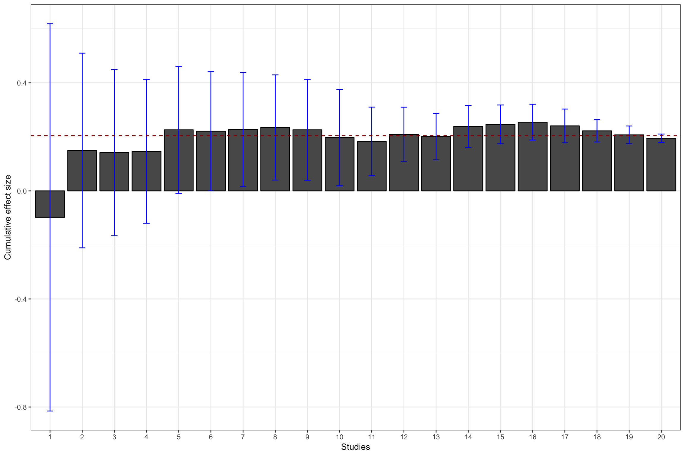

Chapter 12 Meta-analysis and Publication Bias
When several research teams work on a similar topic, they obtain and publish several estimates for the same program of for similar programs. For example, teams of doctors regularly test the same treatment on different samples or populations in order to refine the estimated effect. Similarly, economists report on the effects of similar types of programs (Conditional and Unconditional Cash Transfers, Job Training Programs, microcredit, etc) implemented in different countries.
Meta-analysis aims at summarizing and synthetizing the available evidence with two main goals in mind:
- Increasing precision by providing an average estimated effect combining several estimates
- Explaining variations in treatment effectiveness by relating changes in effect size to changes in sample characteristics.
One key issue that meta-analysis has to face – actually, we all have to face it, meta-analysis simply makes it more apparent – is that of publication bias. Publication bias is due to the fact that referees and editors have a marked preference for publishing statistically significant results. The problem with this approach is that the distribution of published results is going to be censored on the left: we will have more statistically significant results in the published record, and as a consequence, the average ublished result will be an upward biased estimate of the true treatment effect in the population. This is potentially a very severe problem, if the amount of censoring due to publication bias is large. Eventually, this hinges on the true distribution of treatment effects: if it is centered on zero or close to zero, we run the risk of having very large publication bias.
In this chapter, I present first the tools for meta-analysis, and I then move on to testing and correcting for publication bias.
12.1 Meta-analysis
There are several approaches and refinements to meta-analysis. In this section, I am going to present only the most important ones. I’ll defer the reader to other more specialized publications if needed.
I first present the basics of meta-analysis: the constitution and structure of the sample. Second, I present the simplest method to aggregate effects: the weighted average. Third, I present tests for deciding whether the effects are from a homogeneous or a heterogeneous population. Fourth, I explain how to conduct a meta-analysis when effects are heterogeneous. Fifth, I cover the meta-regression that we use to account for heterogeneity in treatment effects. Finally, I explain why usual intuitive methods such as vote-counting are biased.
12.1.1 Basic setting
The basic setting for a meta-analysis is that you have access to a list of estimates for the effect of a given program and for their precision. These estimates come from the literature, searching published and unpublished sources alike. This data is usually collected after an extensive search of bibliographic databases. Then, one has to select among all the studies selected by the search the ones that are actualy relevant. This is the most excruciating part of a meta-analysis, since a lot of the studies selected by hte search algorithm are actually irrelevant. Finally, one has to extract from each relevant paper an estimate of the effect of the treatment and of its precision. In general, one tries to choose standardized estimates such as the effect size (see Section 2.1.6 for a definition) and its standard error. After all this process, we should end up with a dataset like: \(\left\{(\hat{\theta}_k,\hat{\sigma}_k)\right\}_{k=1}^N\), with \(\hat{\theta}_k\) the estimated effect size, \(\hat{\sigma}_k\) its estimated standard error, and \(N\) the number of included studies.
N.sample <- c(100,1000,10000,100000)
N.plot.ES.CLT <- c(10,7,2,1)
data.meta <- data.frame(ES=numeric(),
se=numeric())
se.ww.CLT.ES <- function(N,v1,v0,p){
return(sqrt((v1/p+v0/(1-p))/N)/v0)
}
for (k in 1:length(N.sample)){
set.seed(1234)
simuls.ww[[k]]$se.ES <- se.ww.CLT.ES(N.sample[[k]],simuls.ww[[k]][,'V1'],simuls.ww[[k]][,'V0'],simuls.ww[[k]][,'p'])
test.ES <- simuls.ww[[k]][sample(N.plot.ES.CLT[[k]]),c('ES','se.ES')]
test.ES$N <- rep(N.sample[[k]],N.plot.ES.CLT[[k]])
data.meta <- rbind(data.meta,test.ES)
}
data.meta$id <- 1:nrow(data.meta)
#data.meta$N <- factor(data.meta$N,levels(N.sample))
ggplot(data.meta, aes(x=as.factor(id), y=ES)) +
geom_bar(position=position_dodge(), stat="identity", colour='black') +
geom_errorbar(aes(ymin=ES-qnorm((delta.2+1)/2)*se.ES, ymax=ES+qnorm((delta.2+1)/2)*se.ES), width=.2,position=position_dodge(.9),color='blue') +
geom_hline(aes(yintercept=ES(param)), colour="#990000", linetype="dashed")+
xlab("Studies")+
ylab("Effect size")+
theme_bw()Figure 12.1: Example data set: effect sizes and confidence intervals with \(\delta=\) 0.95
Figure 12.1 shows the resulting sample. I’ve selected 10 studies with \(N=\) 100, 7 studies with \(N=\) 1000, 2 studies with \(N=\) 10^{4}, and 1 study with \(N=\) 10^{5}. The studies are represented in that order, mimicking the increasing sample size of studies that accumulate evidence on a treatment, probably with studies with a small sample size at first, and only large studies at the end for the most promising treatments.
12.1.2 Meta-analysis as a weighted average
The key idea of meta-analysis is to combine the effect size estimates stemming from different studies, weighing them by their relative precision.
Under some assumptions, the estimator \(\bar{\theta}\) converges to the true effect of the treatment. Let’s delineate these assumptions.
Assumption 12.2 imposes that all the studies have been drawn from the same population, where the treatment effect is a constant.
Assumption 12.3 imposes that all the studies estimates are independent from each other. That means that they do not share sampling units and that they are not affected by common shocks.
Under these assumptions, we can show two important results.
Theorem 12.1 says that the error we are making around the true effect of the treatment goes to zero as the sample size in each study decrease. This is great: aggregating the studies is thus going to get us to the truth.
Check if this is a consequence of Kolmogorov’s Law of Large Numbers.
Theorem 12.2 shows that the distribution of the weighted metanalytic estimator converges to a normal, which is very convenient in order to compute sampling noise. In order to obtain an estimator \(\hat{\sigma}^2\) of the variance of the meta-analytic estimator, we can simply replace the individual variance terms by their estimates: \(\hat{\sigma}_k^2\).
wmae <- function(theta,sigma2){
return(c(weighted.mean(theta,(1/sigma2)/(sum(1/sigma2))),1/sum(1/sigma2)))
}The estimated treatment effect size with our sample is 0.19 \(\pm\) 0.02.
Add forest plot.
12.1.3 Constantly updated meta-analysis
What would have happened
cum.wmae.1 <- function(k,theta,sigma2){
return(c(weighted.mean(theta[1:k],(1/sigma2[1:k])/(sum(1/sigma2[1:k]))),1/sum(1/sigma2[1:k])))
}
cum.wmae <- function(theta,sigma2){
return(sapply(1:length(theta),cum.wmae.1,theta=theta,sigma2=sigma2))
}
cum.test <- as.data.frame(t(cum.wmae(data.meta$ES,data.meta$se.ES^2)))
colnames(cum.test) <- c('cum.ES','cum.var')
cum.test$id <- 1:nrow(cum.test)
cum.test$cum.se.ES <- sqrt(cum.test$cum.var)
ggplot(cum.test, aes(x=as.factor(id), y=cum.ES)) +
geom_bar(position=position_dodge(), stat="identity", colour='black') +
geom_errorbar(aes(ymin=cum.ES-qnorm((delta.2+1)/2)*cum.se.ES, ymax=cum.ES+qnorm((delta.2+1)/2)*cum.se.ES), width=.2,position=position_dodge(.9),color='blue') +
geom_hline(aes(yintercept=ES(param)), colour="#990000", linetype="dashed")+
xlab("Studies")+
ylab("Cumulated effect size")+
theme_bw()